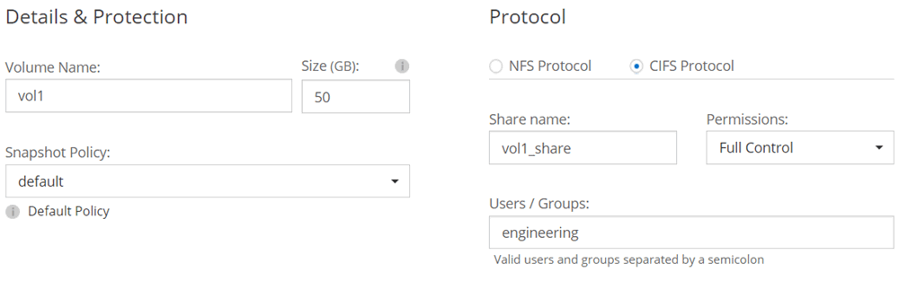

Go to the docs for the latest release.
Launching Cloud Volumes ONTAP in Azure
Contributors
 Download PDF of this page
Download PDF of this page
You can launch a single Cloud Volumes ONTAP system in Azure by creating a Cloud Volumes ONTAP working environment in Cloud Manager.
-
You should have prepared by choosing a configuration and by obtaining Azure networking information from your administrator. For details, see Planning your Cloud Volumes ONTAP configuration.
-
If you want to deploy a BYOL system, you must have the 20-digit serial number (license key) and you must have credentials for a NetApp Support Site account, if the tenant is not already linked with an account.
When Cloud Manager creates a Cloud Volumes ONTAP system in Azure, it creates a resource group that includes the security group, network interfaces, and two storage accounts: one for Azure Standard Storage and one for Premium Storage.
-
On the Working Environments page, click Add Working Environment
-
Under Create, select Cloud Volumes ONTAP.
-
On the Details and Credentials page, optionally change the Azure subscription, specify a cluster name and resource group name, add tags if needed, and then specify credentials.
The following table describes fields for which you might need guidance:
Field Description Azure Subscription
You can choose a different Azure subscription if you provided permissions through multiple subscriptions. If you are using a Managed Service Identity, see Enabling a Managed Service Identity on an existing Cloud Manager virtual machine. If you are using a service principal with credentials, see Assigning the Cloud Manager Operator role to the service principal.
Working Environment Name
Cloud Manager uses the working environment name to name both the Cloud Volumes ONTAP system and the Azure virtual machine. It also uses the name as the prefix for the predefined security group, if you select that option.
Resource Group Name
If you uncheck Use Default, you can type the name of an existing resource group or a new resource group.
Tags
Tags are metadata for your Azure resources. Cloud Manager adds the tags to the Cloud Volumes ONTAP system and each Azure resource associated with the system.
You can add up to four tags from the user interface when creating a working environment, and then you can add more after its created. Note that the API does not limit you to four tags when creating a working environment.
For information about tags, refer to Microsoft Azure Documentation: Using tags to organize your Azure resources.Credentials
These are the credentials for the Cloud Volumes ONTAP cluster admin account. You can use these credentials to connect to Cloud Volumes ONTAP through OnCommand System Manager or its CLI.
If Azure credentials were not specified for your Cloud Manager account, you are prompted to enter them after you click Continue. You need to enter them before you can proceed. -
On the Location page, enter the network information that you recorded in the worksheet, select the checkbox to confirm network connectivity, and then click Continue.
-
On the BYOL License page, specify whether you have a license for this Cloud Volumes ONTAP system.
To understand how licenses work, see Licensing.
-
On the Preconfigured Packages page, select one of the packages to quickly deploy a Cloud Volumes ONTAP system, or click Create my own configuration.
If you choose one of the packages, you only need to specify a volume and then review and approve the configuration.
-
On the Licensing page, change the Cloud Volumes ONTAP version as needed, select a license and a virtual machine type, and then click Continue.
If your needs change after you launch the system, you can modify the license or virtual machine type later.
If a newer Release Candidate, General Availability, or patch release is available for the selected version, then Cloud Manager updates the system to that version when creating the working environment. For example, the update occurs if you select Cloud Volumes ONTAP 9.4 RC1 and 9.4 GA is available. The update does not occur from one release to another—for example, from 9.2 to 9.3. -
On the Azure Marketplace page, follow the steps if Cloud Manager could not enable programmatic deployments of Cloud Volumes ONTAP.
-
If the NetApp Support Site credentials page is displayed, enter your NetApp Support Site credentials.
Credentials are required for BYOL instances. For details, see Why you should link a tenant to your NetApp Support Site account.
-
On the Underlying Storage Resources page, choose either Premium Storage (SSD) or Standard Storage (HDD) and select a disk size.
The disk type is for the initial volume. You can choose a different disk type for subsequent volumes. For help choosing a disk type, see Choosing an Azure disk type.
The disk size is for all disks in the initial aggregate and for any additional aggregates that Cloud Manager creates when you use the simple provisioning option. You can create aggregates that use a different disk size by using the advanced allocation option.
For help choosing a size, see Choosing a disk size.
-
On the Write Speed & WORM page, choose Normal or High write speed, and activate write once, read many (WORM) storage, if desired.
-
On the Create Volume page, enter details for the new volume, and then click Continue.
You should skip this step if you want to use iSCSI. Cloud Manager enables you to create volumes for NFS and CIFS only.
Some of the fields in this page are self-explanatory. The following table describes fields for which you might need guidance:
Field Description Size
The maximum size that you can enter largely depends on whether you enable thin provisioning, which enables you to create a volume that is bigger than the physical storage currently available to it.
Access control (for NFS only)
An export policy defines the clients in the subnet that can access the volume. By default, Cloud Manager enters a value that provides access to all instances in the subnet.
Permissions and Users / Groups (for CIFS only)
These fields enable you to control the level of access to a share for users and groups (also called access control lists or ACLs). You can specify local or domain Windows users or groups, or UNIX users or groups. If you specify a domain Windows user name, you must include the user’s domain using the format domain\username.
Snapshot Policy
A Snapshot copy policy specifies the frequency and number of automatically created NetApp Snapshot copies. A NetApp Snapshot copy is a point-in-time file system image that has no performance impact and requires minimal storage. You can choose the default policy or none. You might choose none for transient data: for example, tempdb for Microsoft SQL Server.
The following image shows the Volume page filled out for the CIFS protocol:

-
If you chose the CIFS protocol, set up a CIFS server on the CIFS Setup page:
Field Description DNS Primary and Secondary IP Address
The IP addresses of the DNS servers that provide name resolution for the CIFS server.
The listed DNS servers must contain the service location records (SRV) needed to locate the Active Directory LDAP servers and domain controllers for the domain that the CIFS server will join.Active Directory Domain to join
The FQDN of the Active Directory (AD) domain that you want the CIFS server to join.
Credentials authorized to join the domain
The name and password of a Windows account with sufficient privileges to add computers to the specified Organizational Unit (OU) within the AD domain.
CIFS server NetBIOS name
A CIFS server name that is unique in the AD domain.
Organizational Unit
The organizational unit within the AD domain to associate with the CIFS server. The default is CN=Computers.
DNS Domain
The DNS domain for the Cloud Volumes ONTAP storage virtual machine (SVM). In most cases, the domain is the same as the AD domain.
-
On the Usage Profile, Disk Type, and Tiering Policy page, choose whether you want to enable storage efficiency features and change the tiering policy, if needed.
For more information, see Understanding volume usage profiles and Data tiering overview.
-
On the Review & Approve page, review and confirm your selections:
-
Review details about the configuration.
-
Click More information to review details about support and the Azure resources that Cloud Manager will purchase.
-
Select the I understand… check boxes.
-
Click Go.
-
Cloud Manager deploys the Cloud Volumes ONTAP system. You can track the progress in the timeline.
If you experience any issues deploying the Cloud Volumes ONTAP system, review the failure message. You can also select the working environment and click Re-create environment.
For additional help, go to NetApp Cloud Volumes ONTAP Support.
-
If you deployed a pay-as-you-go system and the tenant is not linked to a NetApp Support Site account, manually register the system with NetApp to enable support. For instructions, see Registering Cloud Volumes ONTAP.
Support from NetApp is included with your Cloud Volumes ONTAP system. To activate support, you must first register the system with NetApp.
-
If you provisioned a CIFS share, give users or groups permissions to the files and folders and verify that those users can access the share and create a file.
-
If you want to apply quotas to volumes, use System Manager or the CLI.
Quotas enable you to restrict or track the disk space and number of files used by a user, group, or qtree.
 Edit on GitHub
Edit on GitHub